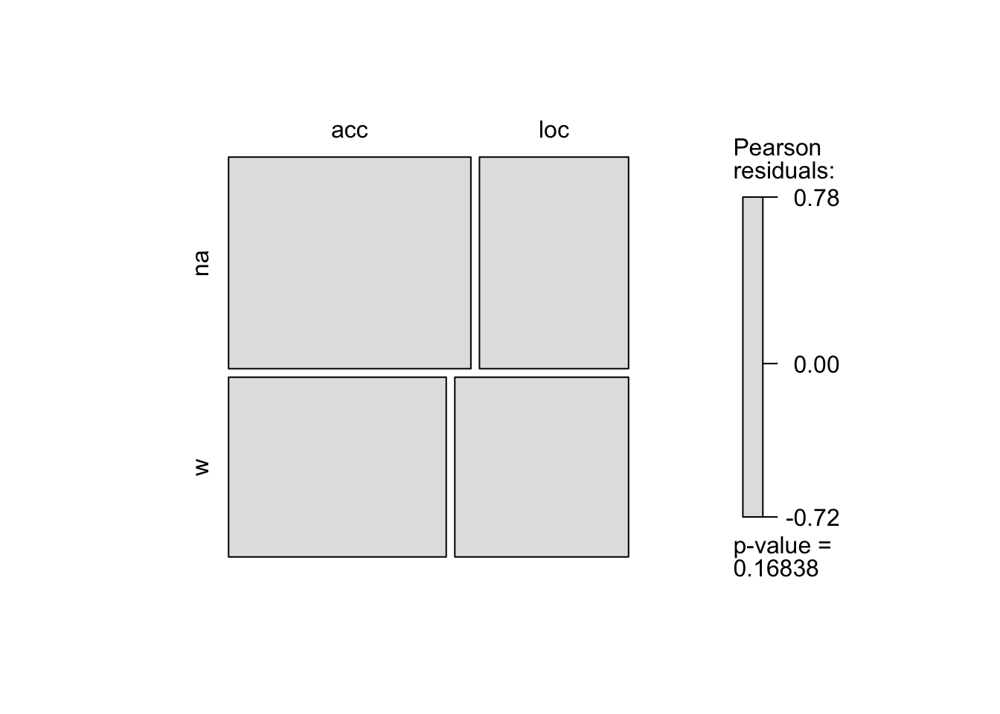
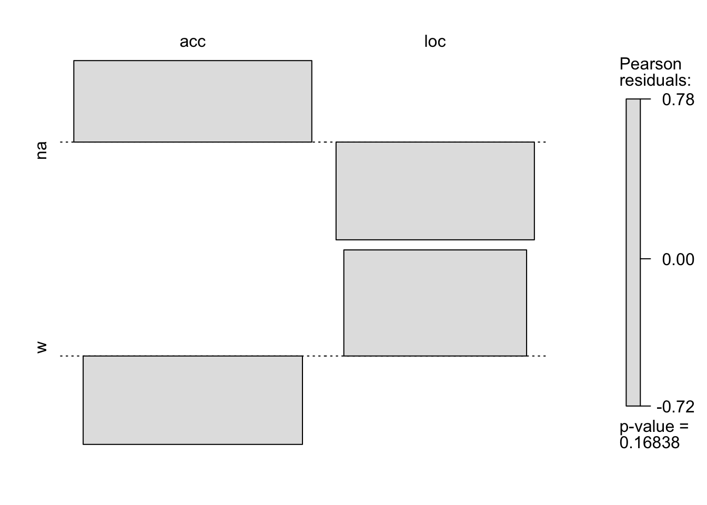

Lab 5
Linguistic data: quantitative analysis and visualisation
George Moroz, Olga Lyashevskaya, Ilya Schurov
25 Jan 2018
0. Libraries in use
library(tidyverse)
library(vcd) # for mosaic plots 1. Prepositions in Slavic languages
There is a case alternation in Russian and Polish in marking of arguments of some verbs (cf. Russian polozhit’ na stole.Loc vs. polozhit’ na stol.Acc ‘put (smth.) on the table’). Our student Polina Nalotova investigated the case marking after prepositions v ‘into’ and na ‘on the surface’ in Russian and Polish.
Let’s study if the preposition type (v vs na) is independent or dependent of the case marking in each language.
1.0 Formulate your hypothesis:
Hypothesis on data distribution:and H0 hypothesis:
H0 hypothesis:Let’s look at Polina’s data sets:
* Russian data: http://goo.gl/KljqjU
* Polish data: http://goo.gl/xNozm2
Use read.csv to download data.
# z <- read.table("a.csv", sep = "...") # text and a separator (delimiter) type, eg. sep="\t", sep=";"
# y <- read.csv("b.txt") # delimiter ","
# x <- read.csv2("c.csv") # delimiter ";"
# w <- read.delim("d.txt") # delimiter "\t"
# v <- readLines("e.txt") # reads text 'as is'
russian <- read.csv("http://goo.gl/KljqjU", sep=",") # read using URL for the fileInspect the summary of your data sets. You can use count(var1, var2) to make a cross-tabulation; mutate(prop = prop.table(n)) to add a new variable (prop) in your table.
1.1 <?> What is the proportion of cases in which “na” is used with “loc” in Polish data set?
Provide your R code in the block below.
# Write your code here.R code tips
This is an example of the pivot table for the Russian data set:
russian %>%
group_by(prep, case) %>%
summarize(n = n()) %>%
mutate(prop = prop.table(n)) %>%
as.data.frame()And here is another way to make a cross-tabulation:
russian %>% xtabs(~ ., data = .) -> russian.tab1.2 <?> Provide the results of the chisq statistics for the Russian data set.
Use chisq.test(x) where x is your contingency table.
# Write your code here.- X-squared = 3233.3, df = 1, p-value < 2.2-15
1.3 <?> Calculate expected values of your contingency table
We will check if the expected values are always >= 5 using chisq.test(x)$expected.
1.4 <?> Calculate effect size using odds ratio
1.5 <?> Plot the fourfold diagrams
1.6 <?> Calculate effect size using Cramer’s V
Formula: V = sqrt(X-squared / [n_obs * (min(ncols, nrows) – 1)])
mosaic(russian.tab, shade = TRUE, varnames = FALSE)
chisq.test(russian.tab)$residuals## case
## prep acc loc
## na 0.5975966 -0.7170638
## w -0.6484873 0.7781282chisq.test(russian.tab)$stdres # Pearson residuals devided by their ## case
## prep acc loc
## na 1.377433 -1.377433
## w -1.377433 1.377433assoc(russian.tab, shade = TRUE, varnames = FALSE)
Try these plots with your own data.
1.7 <?> Provide the results of the chisq statistics for the Polish data set
1.8 <?> What’s wrong with the chisq test?
2. <?> Fisher Exact test
The Fisher exact test should be preferred always when the total number of observations in all cells is smaller than 20. If the total number of observations is from 20 to 40, the Fisher exact test should be preferred if at least one expected frequency is smaller than 5. If the total number of observations is above 40, the Fisher exact test should be preferred if at least one of expected frequencies is smaller than 1" (Sheskin 2011: 646, as cited by Levshina 2015: 214).2.1 <?> Apply Fisher exact test to the Polish data
Use fisher.test(x) to calculate p-value of the two-tailed Fisher Exact test.
2.2 <?> Write down your conclusion, could we reject the H0 hypothesis?
3. SAILS: What kind of adposition type is most dominant?
Olga Krasnoukhova investigated the order of adposition and noun phrase in the South American Indigenous Languages (look here for more infrormation on this topic http://wals.info/chapter/85). Ignoring not known values she obtained, here is her results:
- No adpositions 11
- Prepositions 5
- Postpositions 59
- No dominant order 2 [Krasnoukhova 2014]: http://sails.clld.org/parameters/NP610#5/1.746/289.56
Evaluate whether the obtained results are statistically different from the WALS results:
- No adpositions 30
- Prepositions 511
- Postpositions 576
- Inpositions 8
- No dominant order 58
3.1 <?> Use the matrix() function to create a matrix for the statistical test.
e.g. (matrix(c(5485, 8318, 15913, 8259), nrow = 2))
Don’t forget that WALS data have the “Inpositions” value.
3.2 <?> Which variables have expected values smaller then 5?
Write your answer using the following variables (in alphabetic order): inpositions, no_adpositions, no_dominant_order, postpositions, prepositions.
3.3 <?> Perform Fisher Exact test.
3.4. <?> Write down your conclusions whether Krasnoukhova’s results are statistically different from the WALS results.
4. Binomial test
In a psycholinguistic experiments, the responses to the sequence recall task showed the following results: Subject A: Native speakers’ speech: 27/28 correct Non-native speakers’ speech: 23/28 correct U of Maryland data
Is the difference in scores observed here reflects a difference in the perceptual abilities of the Subject A in the native and non-native language, or whether it simply occurred by chance?
<?> 4.1 Calculate the probability of getting exactly 23 correct answers in non-native contrast.
Use binom.test function like this: binom.test(x=1, n=20, p=5/10, conf.level=0.95 taken 27/28 as a default probability.
binom.test(x=23, n=28, p=27/28, conf.level=0.95)##
## Exact binomial test
##
## data: 23 and 28
## number of successes = 23, number of trials = 28, p-value =
## 0.002871
## alternative hypothesis: true probability of success is not equal to 0.9642857
## 95 percent confidence interval:
## 0.6310667 0.9393571
## sample estimates:
## probability of success
## 0.8214286